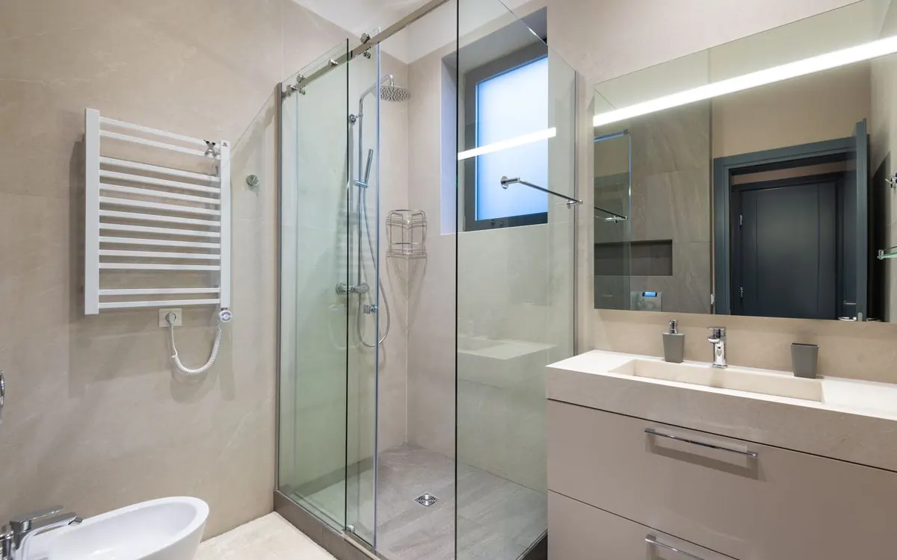
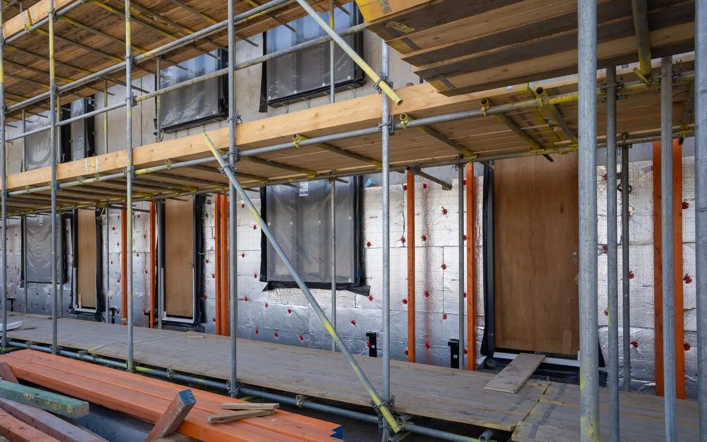
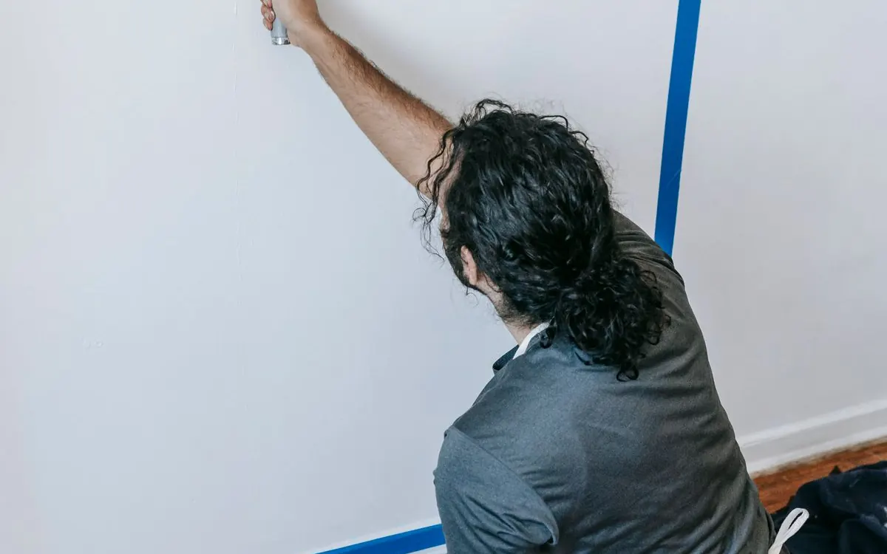
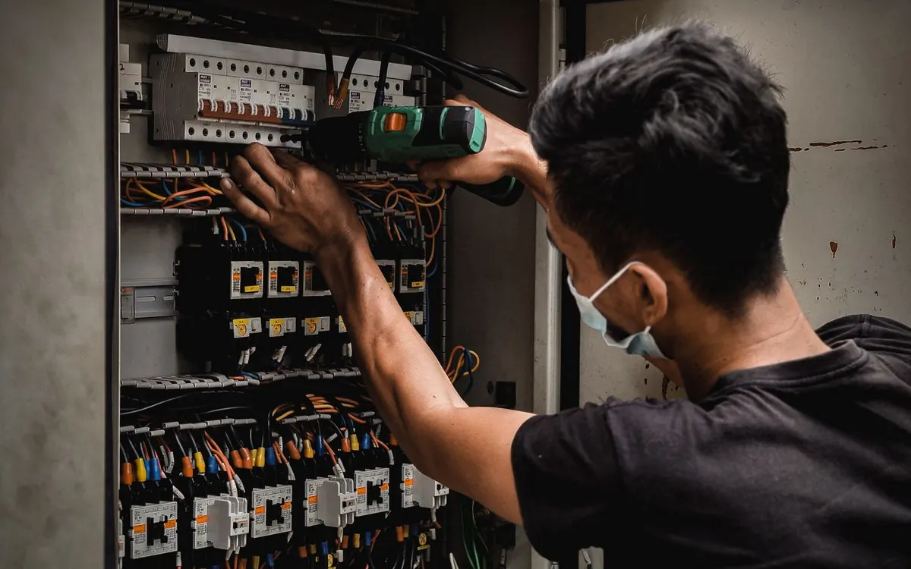
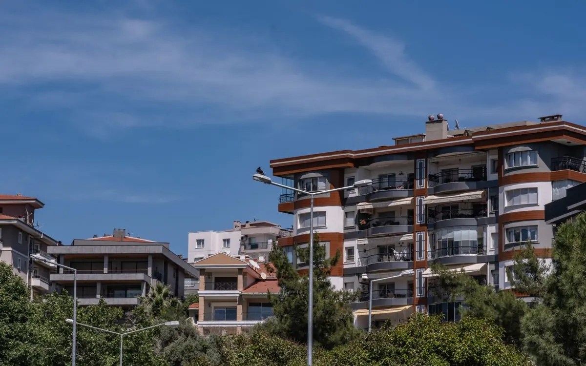
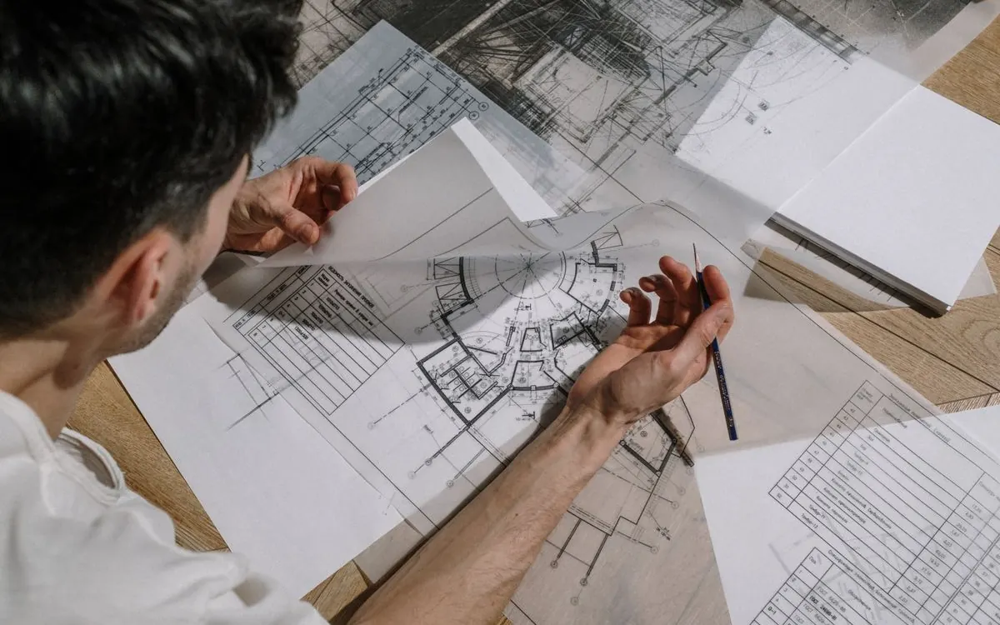
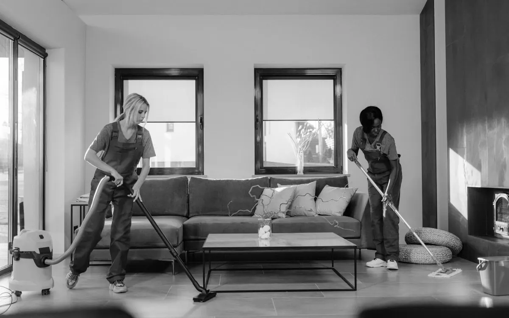

Hayalinizdeki mekân.
Ustalıkla gerçeğe.
Otel, ev ve iş yerleri için tadilat ve yenileme.
Hizmetlerimiz
Her hizmet için WhatsApp’tan doğrudan bilgi ve teklif alabilirsiniz.









Görseller temsilidir.
Hakkımızda
25 yıllık deneyim.
18 otelin A’dan Z’ye tadilatı ve çok sayıda daire yenilemesi.
YGT İnşaat Yapı Emlak olarak Antalya Muratpaşa’daki merkezimizden tecrübeli ekibimizle tadilat, yapı ve mobilya hizmetleri sunuyor, mimari destek sağlıyoruz.
Rakamlarla
25yıl
Tadilat ve yapı işlerindeki deneyimimiz.
18otel
A’dan Z’ye tadilatını yürüttüğümüz tesisler.
10hizmet
Çatıdan tesisata, mobilyadan mimari desteğe.
Referanslar
Tadilat ve yenileme çalışması yürüttüğümüz tesislerden bazıları.
- TMT OtelBodrum
- Leka HotelBodrum
- Stone PlaceManavgat, Çolaklı
- Mare OtelBoğazkent
- Seagate HotelBoğazkent
- Oasis HotelAlanya, Konaklı
- Aegean Dream ResortBodrum, Turgutreis
- Club Zigana OtelBeldibi
- Mahidevran OtelBodrum
- Vera Group Hotelleri
- Saturn Palace Hotel
- Voyage HotelBelek
Sık sorulanlar
Küçük tadilat işleri yapıyor musunuz?+
Evet. Boya, tesisat ve çatı onarımı gibi tek bir işe yönelik ihtiyaçlarınızı da değerlendirebiliriz.
Fiyat ve süre nasıl belirlenir?+
Alan, mevcut durum, malzeme ve iş kapsamına göre belirlenir. İlk görüşme için mekân fotoğraflarını WhatsApp’tan paylaşabilirsiniz.
Hangi bölgelerde çalışıyorsunuz?+
Adresimiz Muratpaşa, Antalya’dadır. Projenizin konumunu paylaşarak hizmet ve ekip uygunluğunu öğrenebilirsiniz.
İletişim
Adresimiz
Sinan, Recep Peker Cd. 30/D07000 Muratpaşa / Antalya